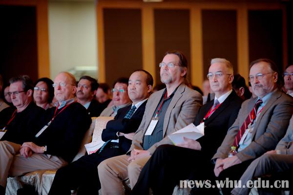

国际顶级信息学院联盟年会首次在亚洲举办
作者：李信时间:2017年3月22日
（转自武汉大学官网）3月22日，由我校信息管理学院和成均馆大学共同主办的国际顶级信息学院联盟年会(iConference 2017)在汉举行，这是该年会首次在亚洲举办，吸引了国内外500多名信息管理领域的专家学者参加。
会议主题是“影响·拓展·提升：跨越信息社区的全球合作”。会议报告涵盖人际交互、信息行为、数据挖掘、信息检索、知识发现、社交媒体、数据科学、信息教育、信息组织等多个主题，展现了国际信息管理研究的理论前沿，为各国专家学者提供了多学科交融、知识分享的平台。会议共收到论文稿件400余篇，注册人数逾500人。
开幕式上，校长窦贤康首先致辞。他说，武汉大学信息管理学院是我国历史最悠久、规模最大、实力最强的信息管理教育与研究机构。学院成功申请加入国际顶尖信息学院联盟(iSchool)，是我国第一个、也是发展中国家第一个、全亚洲第二个联盟成员并入选核心成员小组。他希望会议能汇聚国内外前沿创新成果，推动该领域成员深化合作与全面创新。
武汉大学信息管理学院院长方卿、成均馆大学情报科学和数据科学系教授SamOh(萨姆.欧)分别致辞。信息学院运动发起者、美国华盛顿信息学院创始院长Mike Eisenberg(迈克.艾森伯格)、原汤森路透知识产权与科技事业部高级总监Jason Rollins(杰森.罗林斯)、百度地图事业部总经理李东旻也分别做了专题报告。
会议包括完整论文报告、初步论文报告、小型研讨会、iSchool最佳实践、院长论坛、早期职业生涯交流、互动与启迪分论坛、中文分论坛、博士生论坛等多种形式的交流。其中中文分论坛与iSchool最佳实践为首次设立。
据介绍，iConference是国际图书情报领域的顶级学术盛宴，全球顶尖信息科学学院联盟成员及其核心小组的院长和分管科研的副院长每年必须参加的学术会议。我校信息管理学院于2015年2月正式获得此次会议的主办权。会议的成功召开，扩大了中国信息领域的国际影响力和知名度，对提高中国信息领域的国际学术地位、科研教学能力等方面具有重要意义。
